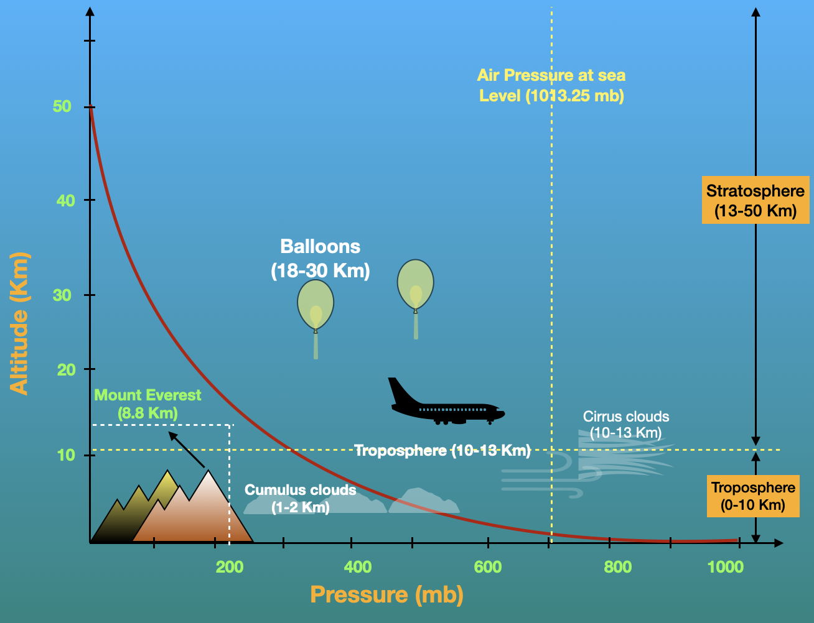

The Earth's Atmosphere: Understanding its Layers and Significance

The Earth's atmosphere is a vital component that envelopes our planet, providing the necessary conditions for life to thrive. It is composed of different layers, each with its unique characteristics and significance.
Layers of the Atmosphere:
Troposphere: The troposphere is the lowest layer of the Earth's atmosphere, extending from the surface to about 8-15 kilometers above sea level. It is where weather phenomena occur, including clouds, precipitation, and winds. The troposphere plays a crucial role in regulating the Earth's climate and sustaining life by containing the oxygen we breathe.
Stratosphere: Above the troposphere lies the stratosphere, reaching up to about 50 kilometers above the Earth's surface. One of the most notable features of the stratosphere is the presence of the ozone layer, which absorbs harmful ultraviolet (UV) radiation from the sun, protecting life on Earth from its harmful effects.
Mesosphere: Beyond the stratosphere lies the mesosphere, extending from about 50 to 85 kilometers above the Earth's surface. The mesosphere is where most meteors burn up upon entering the Earth's atmosphere, creating the mesmerizing phenomenon known as shooting stars or meteors.
Thermosphere: The thermosphere is the layer above the mesosphere, extending up to approximately 600 kilometers above the Earth's surface. It is characterized by extremely high temperatures caused by the absorption of solar radiation. Despite its high temperatures, the thermosphere would feel very cold to humans due to the extremely low density of particles.
Exosphere: The exosphere is the outermost layer of the Earth's atmosphere, gradually fading into space. It is where the Earth's atmosphere merges with outer space, and the particles become so sparse that they can travel long distances without colliding with one another.
Significance of the Atmosphere:
Life Support System: The Earth's atmosphere provides essential gases such as oxygen for respiration, carbon dioxide for photosynthesis, and nitrogen for various biological processes, making it a crucial life support system for all living organisms.
Climate Regulation: The atmosphere plays a vital role in regulating the Earth's climate by trapping heat near the surface through the greenhouse effect. This helps maintain stable temperatures conducive to life on Earth.
Protection from Harmful Radiation: The ozone layer in the stratosphere shields the Earth from harmful ultraviolet (UV) radiation, which can cause skin cancer, cataracts, and other health issues in humans and damage ecosystems.
Weather Systems: The atmosphere is the stage for various weather phenomena, including clouds, precipitation, storms, and winds. Understanding the atmosphere's dynamics is crucial for predicting and managing weather-related events.
Communication and Navigation: The atmosphere facilitates communication and navigation systems by allowing the transmission of radio waves and providing a medium for air and sea travel.